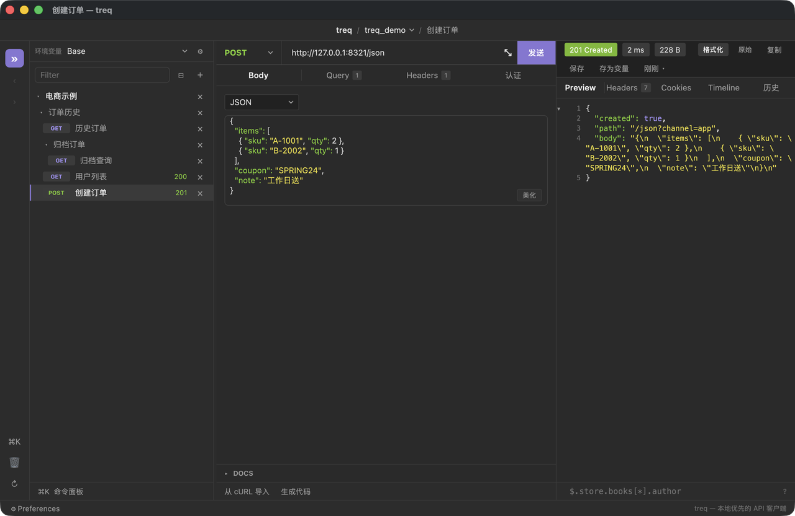

tr
treq
API Client · Rust + GPUI
本地优先的接口调试客户端：界面像 Insomnia，数据是磁盘上一堆能进 Git 的 YAML。
左边是空间 → 集合 → 分组（任意层级）→ 请求的树，中间编辑，右边看响应。 五种 Body、四种认证、JSON 高亮与折叠、状态码 / 耗时 / 大小、JSON 路径提示、cURL 导入与代码生成。 285 个测试函数和每次改动后的截图自检，是它敢连续重构的前提。
33.3k 行 Rust
21 commits
已装 /Applications/treq.app
